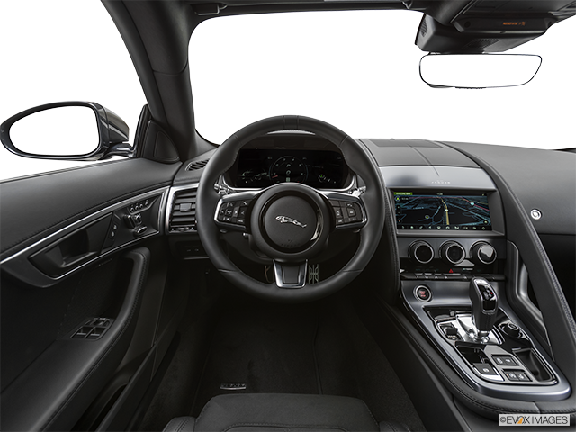

Jaguar F-type
Главная страницаJaguar F-Type — двухместный родстер от Jaguar Cars, который поступил в продажу в 2013 году. Является преемником одного из самых популярных спорткаров прошлого века — Jaguar E-Type. В течение разработки конкурента таких знаменитых родстеров, как Mercedes-Benz SLK-класс и BMW Z4 носил имя X152. Также есть купе и полноприводная версии автомобиля, а в будущем должна появиться гибридная модификация. Продажи начались в мае 2013 года в Великобритании по цене 58500 — 79950 £[1].
Силовые установки и подвеска
На выбор покупателя 3 суперчарджер бензиновых двигателя — 3-литровый V6 с мощностью 335 или 375 (S) лошадиных сил, либо 5-литровый V8, развивающий 495 лошадиных сил (V8S). Все они агрегатируются 8-ступенчатой автоматической коробкой передач Quickshift, однако имеют разные передаточные числа. Версии S и V8S имеют соответственно самоблок повышенного трения и дифференциал, блокируемый при помощи фрикционной муфты. Также их легко различить по выхлопной трубе — у V6 сдвоенные патрубки посередине, а у V8 — по бокам. Подвеска автомобиля, как и кузов, состоит из алюминия. Электроника отслеживает ускорение, нажатие на педали, сопротивление движению и стиль вождения, подстраиваясь под водителя. Всего она имеет 25 вариантов поведения в зависимости от погодных условий и стиля вождения. Разбалансированность массы автомобиля по осям — 50:50.
- Размерность колёс — R18
- Передняя подвеска — независимая, на двойных поперечных рычагах, пружинная
- Задняя подвеска — независимая, на двойных поперечных рычагах, пружинная
- Рулевое управление — шестерня-рейка с гидроусилителем
- Передние тормоза — дисковые, вентилируемые (размер — 355 мм, 380 мм (V8S))
- Задние тормоза — дисковые (размер — 326 мм, 355 мм (S), 380 мм (V8S))
Интерьер и оснащение
Интерьер F-Type имеет много интересных решений, таких как выезжающие из консоли дефлекторы обдува, поручень, визуально разделяющий переднюю часть салона на 2 части. Автомобиль не лишён таких деталей, как сенсорный 6,8-дюймовый дисплей, мультифункциональный трёхспицевый руль, отделанный чёрной алькантарой и урезанный снизу у S-версий, кожаный салон, мультимедиа система Meridian мощностью 380 Вт с 10 динамиками или 770 Вт и с 12 динамиками и тд. Также F-Type оснащается системой «старт-стоп», снижающей расход топлива на 5 %, биксеноновыми фарами у базовой версии и светодиодными у старших, активной выхлопной системой, системой распознавания поворотов Corner Recognition, которая держит выбранную передачу до завершения поворота, выдвижные спойлер (из композитного материала, выдвигается на скорости 96 км/ч, убирается на 64 км/ч и увеличивает прижимную силу на 120 кг[12]) и дверные ручки и др. Багажник, объём которого не зависит от положения крыши, сконфигурирован под сумку для гольфа или объём нескольких чемоданов разного размера. Из систем безопасности F-Type имеет отключаемый электронный контроль устойчивости, 4 подушки безопасности, травмобезопасный капот, «выстреливающий» вперёд, чтобы погасить энергию удара, и тп.
